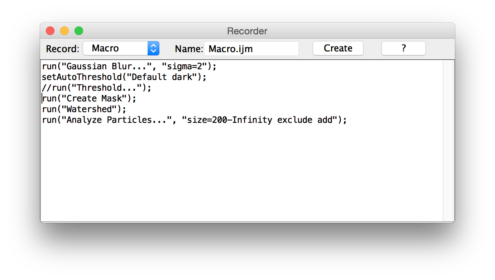
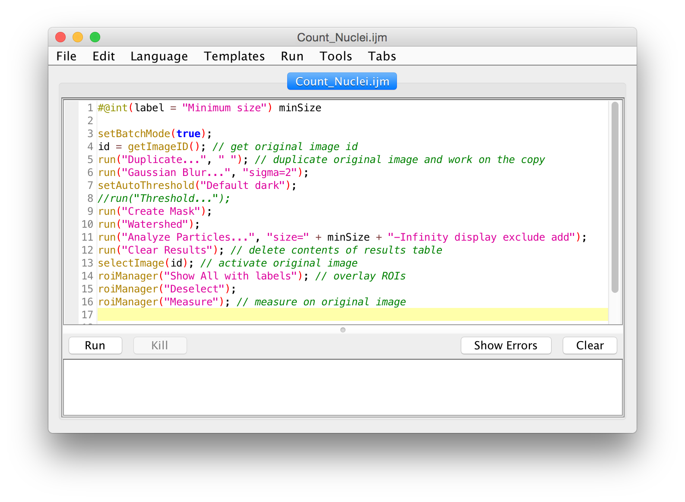
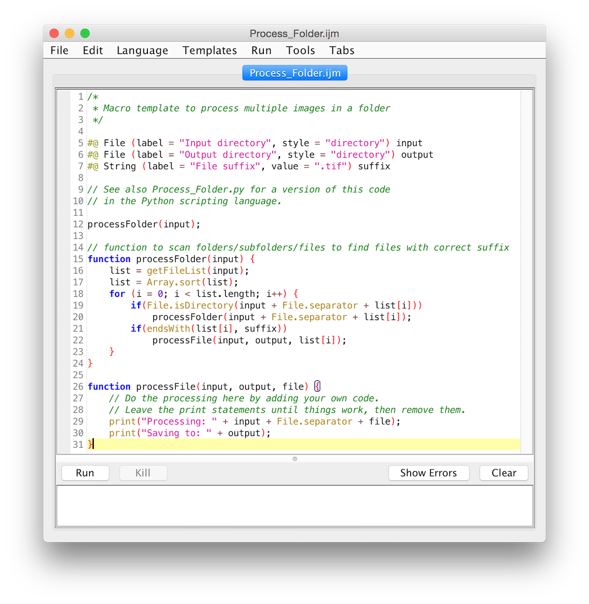

Scripting with Fiji


Why are scripts useful?
They facilitate reproducible science:
- Document your work
- Automate your analysis
- Share with the world
Macro Recorder
1. Launch the Recorder
- Use the Command Finder! (Ctrl+L)
- OR: click the Dev icon, then Record...
- OR: Plugins ▶ Macros ▶ Record...
2. Execute operations

Use the Command Finder (Ctrl+L)!
- Open Blobs (Shift+B)
- Apply a threshold (Shift+T)
- Create Mask
- Dilate
- Watershed
- Analyze Particles...
- Show: Nothing
- Add to Manager
3. Spruce it up

- Click the "Create" button
- Use script parameters
setBatchMode(true)- Use image IDs
- Store in
scripts- In a folder matching the desired menu
- Use underscore for spaces
Script Editor
- Comments
- Variables
- Functions
- String manipulation
- Conditionals
- Loops
Batch processing
Process ▶ Batch ▶ Macro...

Templates ▶ ImageJ 1.x ▶ Examples ▶ Process Folder (IJ1 Macro)

Script parameters
- Templates ▶ Intro ▶ Widgets (JavaScript)
- Run
- Fix the bugs!
- To the
boundedIntegerparameter, add:style="scroll bar" - To the
stringparameter, add:choices={"quick fox", "lazy dog"} - Run again
Macros: comments
// Comments allow you to put human-readable thoughts
// into your code.
// The goal of this "macro" is simply to teach you about comments!
// Comments help you to remember why you did something:
// Set the value to "2" because my boss said so!
value = 2; // Comments can be added to any line!
// Code can be disabled by commenting it out:
// x = y * 2;
Macros: variables
// what sorts of values can we assign?
title = "Hello, World!"; // string
intensity = 255; // number
a = exp(x * sin(y)) + atan(x * y – a); // expression
// string constant vs. variable name
text = "title";
text = title;
x = 3;
y = x;
x = 5; // what is the value of y after this?
// the variable is assigned after the expression is evaluated
intensity = intensity * 2;
Macros: functions
print("Hello, world!");
// functions can return values
// Hint: use parameters instead of calling getNumber
number = getNumber("Type in a number!", 5);
// the "run" function is the most important one
run("Duplicate...", "title=New");
// for arguments with spaces, enclose in square brackets
run("Duplicate...", "title=[with spaces]");
Macros: strings
name = "copy";
// you can concatenate strings, and strings and numbers
text = "The name is " + name;
// what happens when we run this?
run("Duplicate...", "title=name");
// what's different with this line?
run("Duplicate...", "title=" + name);
Macros: conditionals
// @String instructor
if (getBoolean("Is " + instructor + " going too fast?")) {
hint = "Tell them to to slow down!";
}
else {
hint = "Try to modify the code, play with it...";
}
showMessage("Advice:", hint);
Macros: loops
// For loops:
// They use assignment, test, increment
// Use when you know the # of times the loop will run
for (i = 1; i <= 10; i++) {
print("Counter: " + i);
}
// While loops:
// Use when you do not necessarily know the # of times the loop will run
while (getBoolean("Do you want me to keep going?")) {
print("Ok, I'm still going...");
}
showMessage("Ok, I'm done!");
Macros: tying it together
Do you notice a bug in this code?
// this example makes a stack of blurred versions of the
// current slice with a range of radii.
radius = getNumber("Maximal radius?", 5);
title = "Blurred stack of " + getTitle();
run("Duplicate...", "title=[" + title + "]");
run("Select All");
run("Copy");
for (i = 1; i <= radius; i++) {
run("Add Slice");
run("Paste");
run("Gaussian Blur...", "radius=" + radius);
}
Further reading
Help from the community—ImageJ forum!
Scripting guide:
Additional workshops and presentations: